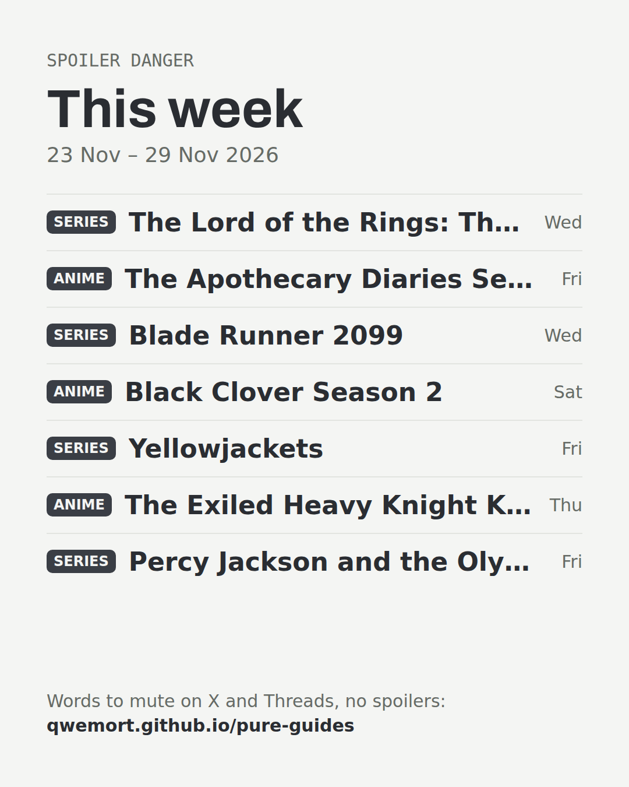

Небезпека спойлерів цього тижня: 23 лист. – 29 лист. 2026 р.
Не дивишся або не граєш у день виходу? Ось що виходить цього тижня, тож спойлери будуть усюди. Замьють слова, поки люди не почали постити. На сторінці немає спойлерів: ні назв серій, ні сюжету, тільки назви і дати. Натисни на слово, щоб скопіювати, або скопіюй групу.

Додай у свій календар. Підпишись один раз, і кожен реліз з’явиться в календарі з посиланням, що замьютити. Оновлюється сам щотижня. Google Календар · Apple / Outlook · файл .ics
The Lord of the Rings The Rings of Power спойлер|The Lord of the Rings The Rings of Power кінцівка|The Lord of the Rings The Rings of Power фінал|The Lord of the Rings The Rings of Power spoiler|The Lord of the Rings The Rings of Power spoilers|The Lord of the Rings The Rings of Power finale|The Lord of the Rings The Rings of Power ending|The Lord of the Rings The Rings of Power leak
Percy Jackson and the Olympians спойлер|Percy Jackson and the Olympians кінцівка|Percy Jackson and the Olympians фінал|Percy Jackson and the Olympians spoiler|Percy Jackson and the Olympians spoilers|Percy Jackson and the Olympians finale|Percy Jackson and the Olympians ending|Percy Jackson and the Olympians leak
The Institute спойлер|The Institute кінцівка|The Institute фінал|The Institute spoiler|The Institute spoilers|The Institute finale|The Institute ending|The Institute leak
The Gilded Age спойлер|The Gilded Age кінцівка|The Gilded Age фінал|The Gilded Age spoiler|The Gilded Age spoilers|The Gilded Age finale|The Gilded Age ending|The Gilded Age leak
The Exiled Heavy Knight Knows How to Game the System спойлер|The Exiled Heavy Knight Knows How to Game the System кінцівка|The Exiled Heavy Knight Knows How to Game the System фінал|The Exiled Heavy Knight Knows How to Game the System spoiler|The Exiled Heavy Knight Knows How to Game the System spoilers|The Exiled Heavy Knight Knows How to Game the System finale|The Exiled Heavy Knight Knows How to Game the System ending|The Exiled Heavy Knight Knows How to Game the System leak
Reincarnated as a Sword спойлер|Reincarnated as a Sword кінцівка|Reincarnated as a Sword фінал|Reincarnated as a Sword spoiler|Reincarnated as a Sword spoilers|Reincarnated as a Sword finale|Reincarnated as a Sword ending|Reincarnated as a Sword leak
Even the Student Council Has Its Holes спойлер|Even the Student Council Has Its Holes кінцівка|Even the Student Council Has Its Holes фінал|Even the Student Council Has Its Holes spoiler|Even the Student Council Has Its Holes spoilers|Even the Student Council Has Its Holes finale|Even the Student Council Has Its Holes ending|Even the Student Council Has Its Holes leak
Для YouTube і Reddit. Я роблю безкоштовне розширення Pure Spoiler Blocker: воно розмиває відео, пости й коментарі зі спойлерними словами для тайтлів, які ти обереш, на YouTube, Reddit і X. Працює локально, без акаунта і стеження, код відкритий для перегляду. Воно читає текст, тож спойлер лише на картинці може проскочити. Встановити для Chrome або подивитись демоEN. Чесно: розширення моє.
Хочеш обговорити кінцівку і нікому не зіпсувати? Зроби спойлер-посиланняEN: люди побачать розмитий текст і самі вирішать, чи відкривати.
Розклад: AniList (аніме), TVmaze (серіали, CC BY-SA), ігри з указаних джерел. Час за Europe/Warsaw. Не пов’язано з правовласниками. Чогось бракує? Попроси список.
 Weekly · Monday
Weekly · Monday